Tarefa
1) Quadrilátero com vértices nos pontos médios de outro quadrilátero
a) Construa um quadrilátero qualquer
b) Encontre os pontos médios de seus lados
c) Construa um quadrilátero com vértices nesses pontos médios
d) Mova os vértices do quadrilátero inicial
e) O que você pode observar no quadrilátero com vértices nos pontos médios? Ele possui alguma propriedade em especial?
2) Quadrilátero inscrito
a) Construa uma circunferência
b) Construa um quadrilátero convexo inscrito nessa circunferência
c) Procure encontrar alguma propriedade que se mantém no quadrilátero movendo seus vértices sobre a circunferência
d) O que você pode observar no quadrilátero? Ele possui alguma propriedade em especial?
3) Quadrilátero circunscrito
a) Construa uma circunferência
b) Construa um quadrilátero convexo circunscrito a essa circunferência
c) Procure encontrar alguma propriedade que se mantém no quadrilátero sobre a circunferência
d) O que você pode observar no quadrilátero? Ele possui alguma propriedade em especial?
4) Mediana de triângulo retângulo
a) Construa duas retas perpendiculares r e s e chame de P o ponto de interseção de r e s
b) Coloque um ponto A sobre r e um ponto B sobre s
c) Construa o segmento AB
d) Obtenha o ponto médio M do segmento AB
e) Construa o segmento MP
f) Movimente os pontos A e B e verifique se existe alguma relação entre as medidas da mediana MP e da hipotenusa AB do triângulo retângulo ABP
g) Enuncie a propriedade observada
5) Área do triângulo
a) Construa um segmento BC
b) Construa uma reta r paralela ao segmento (e que não o contenha)
c) Coloque um ponto A sobre r (diferente do ponto usado para a criação de r)
d) Construa o triângulo ABC
c) Obtenha a área do triângulo
d) Movimente o ponto A e verifique novamente a área
e) Porque a área não se modificou?
6) Construir um triângulo isósceles.
Verifique se num triângulo isósceles:
a) a mediana coincide com a bissetriz e a altura relativas à base,
b) a mediana coincide com a bissetriz e a altura relativas a um dos lados congruentes,
c) as medianas relativas aos ângulos da base são congruentes,
d) as bissetrizes relativas aos ângulos da base são congruentes,
e) as alturas relativas aos ângulos da base são congruentes.
7) Construir um triângulo retângulo ABC com hipotenusa BC.
a) Verifique o Teorema de Pitágoras.
b) Seja M o ponto médio da hipotenusa.
c) Meça as distâncias de M aos vértices do triângulo.
d) Que propriedade você observou?
8) Construir um triângulo eqüilátero.
a) Construir as alturas e verificar se suas medidas coincidem.
b) Dividir a medida do lado pela altura e mover os vértices do triângulo. O resultado da divisão se altera? Porque? O resultado vale para qualquer triângulo? E para triângulo isósceles?
9) Perímetros e ângulos
a) Na janela 2 selecione a opção 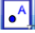. Marque no plano cartesiano os seguintes pontos: A (0,2) e B (3,0). No campo de entrada digite o ponto C=(7,4) e clique em Enter. Repita este procedimento para o ponto D=(3,4).
b) No menu exibir selecione a opção eixos. Clique com o botão direito do mouse na janela gráfica e selecione a opção malha.
c) Mude a cor dos pontos. Para mudar a cor de um ponto, clique sobre ele com o botão direito do mouse, selecione a opção propriedades e em seguida a opção cor. Escolha a cor desejada e clique em fechar.
d) Na janela 5 selecione a opção e clique sobre os pontos ABCDA e forme o polígono ABCD.
e) Na janela 1 selecione a opção 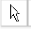 e mova cada ponto para fora do polígono formado.
f) Clique com o botão direito do mouse em cada letra minúscula formada e selecione a opção Exibir Rótulo. Note que estas letras irão desaparecer.
g) Na janela 8 clique em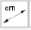 e em seguida clique nos pontos A e B. Depois em B e C. Depois em C e D e por fim em D e A. Na tela aparecerá os valores de cada lado do quadrilátero formado.
h) Na janela 1 selecione a opção 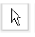 e mova o valor de cada lado para fora do quadrilátero.
i) No campo de entrada digite s=a+b+c+d e clique em Enter. Na janela algébrica aparecerá o valor do perímetro do quadrilátero formado. 17
j) Na janela 8 selecione a opção 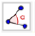. Clique em ADC, DCB, CBA e BAD. Na tela aparecerá o valor de cada ângulo do quadrilátero formado. Na janela 1 selecione a opção e arraste cada valor para frente de seu ângulo formado.
10) Ângulos internos
a) Na janela 2 selecione a opção 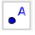 e marque os pontos A(3,-1) e o ponto B(5,-1). Na janela 5 selecione a opção 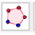 e clique em A e depois em B. Na janela que abriu na tela digite 7 e clique em Ok. Com o botão direito do mouse desmarque os eixos e a malha. Clique com o botão direito do mouse sobre cada letra minúscula formada e clique em Exibir Rótulo.
b) Na janela 1 selecione a opção 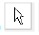 e mova cada ponto para fora do heptágono. Na janela 8 selecione a opção 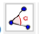 e clique em BAG, AGF, GFE, FED, EDC, DCB e em CBA. Perceba que todos os ângulos tem a mesma medida. Na janela 1 selecione a opção 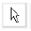 e ajeite o valor de cada ângulo formado, dentro da figura.
11) Reflexão
a) Na janela 2 selecione a opção 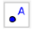 e marque os pontos A(-3,5), B(-3,3), C(-1,2), D(2,1) e E(3,6). Na janela 5 selecione a opção e clique nos pontos ABCA. Na janela de visualização clique com o botão direito do mouse e selecione a opção Eixos. Os eixos irão desaparecer. Na janela 11 selecione a opção 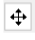 e arraste a malha um pouco para baixo. Na janela 3 selecione a opção 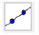 e clique nos pontos D e E. Na janela 9 selecione a opção 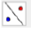 e clique no polígono e na reta. Na janela 1 selecione a opção e movimente a reta. Agora movimente os pontos A, B e C e observe.
b) No campo de entrada digite A=(-3,5) e clique em Enter. Repita o mesmo procedimento para os pontos B=(-3,3), C=(-1,2) e D=(2,3). Na janela 5 selecione a opção 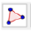 e clique nos pontos ABCA. Na janela de visualização clique com o botão direito do mouse e selecione a opção Eixos. Os eixos irão desaparecer Na janela 9 selecione a opção 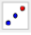 e clique no polígono e no ponto D. Na janela 1 selecione a opção 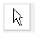 e mova o ponto D. Observe o que acontece. Agora movimente os vértices do polígono e veja o que acontece.
Responsável:
Centro de Educação a Distância do Ceará - CED